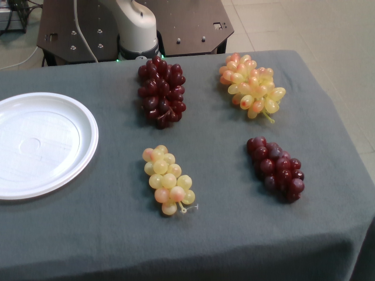
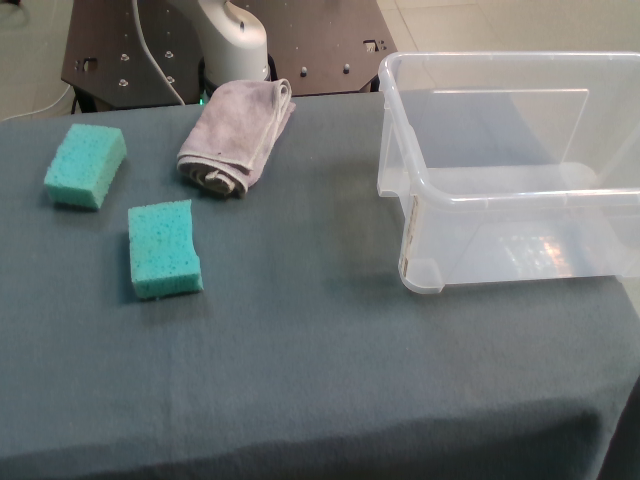
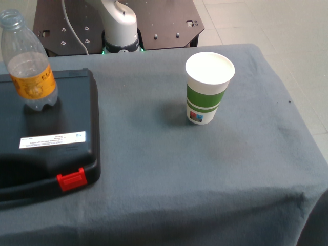
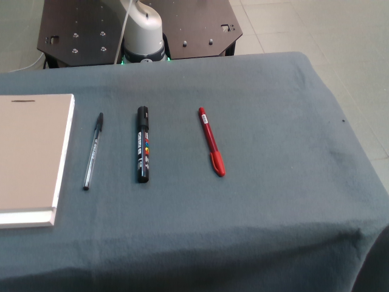

Real-world results
Thirty trials evaluate whether the proposed system can turn natural-language instructions into plans and execute those plans with a physical robot.
Results summary
The proposed planning method produced a valid symbolic plan in 25 of 30 trials. Of those 25 executable trials, the robot completed 23 successfully. A video of each successful execution is available in the detailed results. The LLM-Plan baseline did not produce executable plans (look at action missing).
25 / 30Planning successes83.3%
23 / 25Execution successes92.0% of executable trials
23† / 30LLM-plan generated plansIncludes partial successes
Example tasks
The images show the initial robot workspace for four representative trials.
Before

Before

Before

Before

All trials
| ID | Assigned task | Ours - Planning result | Ours - Execution | Video | Ours - Plan and Problem | LLM-Plan Result | LLM Plan |
|---|
† Missing look at operation required for execution.